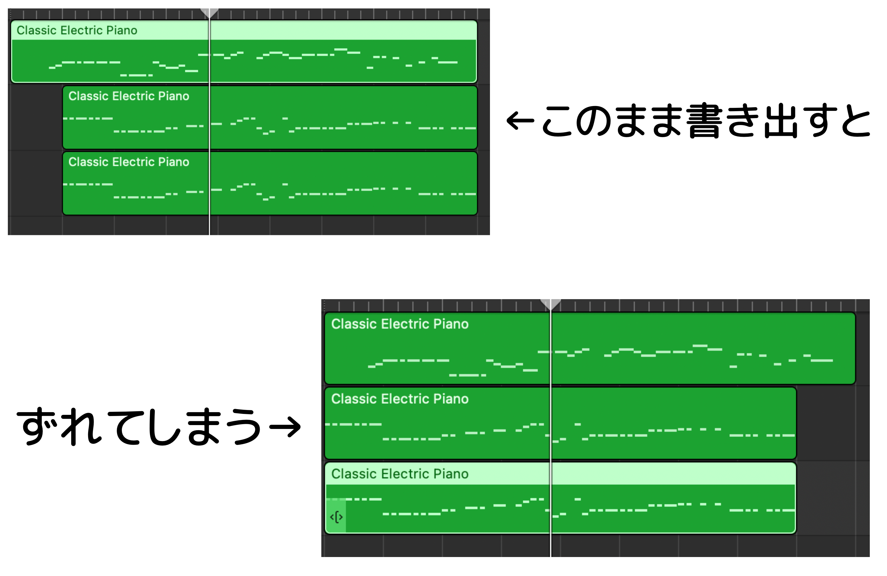
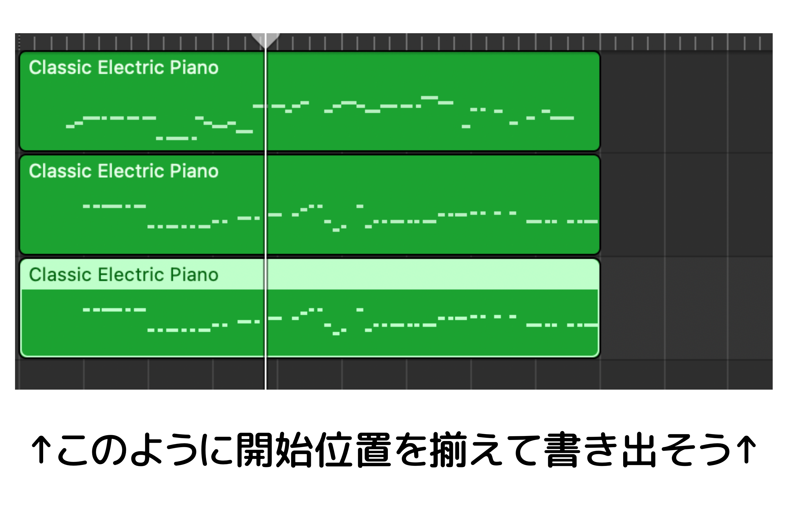

GarageBandで全てのリージョンを選択し、ファイル＞リージョンをループライブラリに追加…を選択してそのまま作成を押します。
そしてこのページの「ファイル選択」を押して~/Library/Audio/Apple Loops/User Loops/SingleFiles/にアクセスして先ほど書き出されたリージョンのファイル全てを選択します。
アクセスする方法は、ファイル選択画面で⌘⇧Gを押して上にある~/Library/.../SingleFiles/をコピペすればできます。またよく使う方はSingleFilesのエイリアスを作りましょう。
ドラムは対応していません。ドラムもmidiにしたい場合は、GarageBandで音色をドラム以外に変更してからお試しください。
リージョンの開始位置は揃えてください。
 いかなる損害に関しても一切責任を負いません。また予告なしにサービスの停止をする場合がございます。ご了承ください。